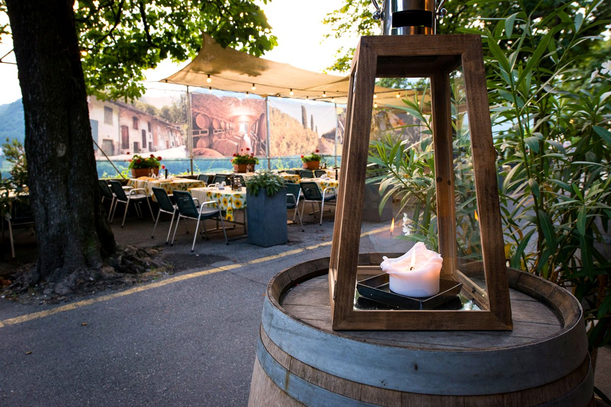
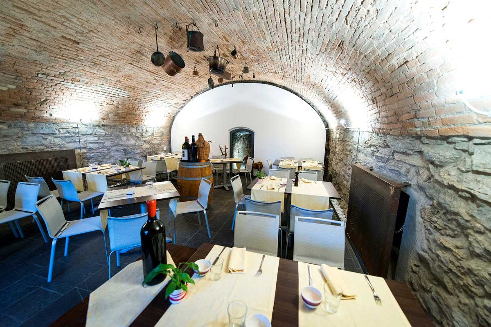
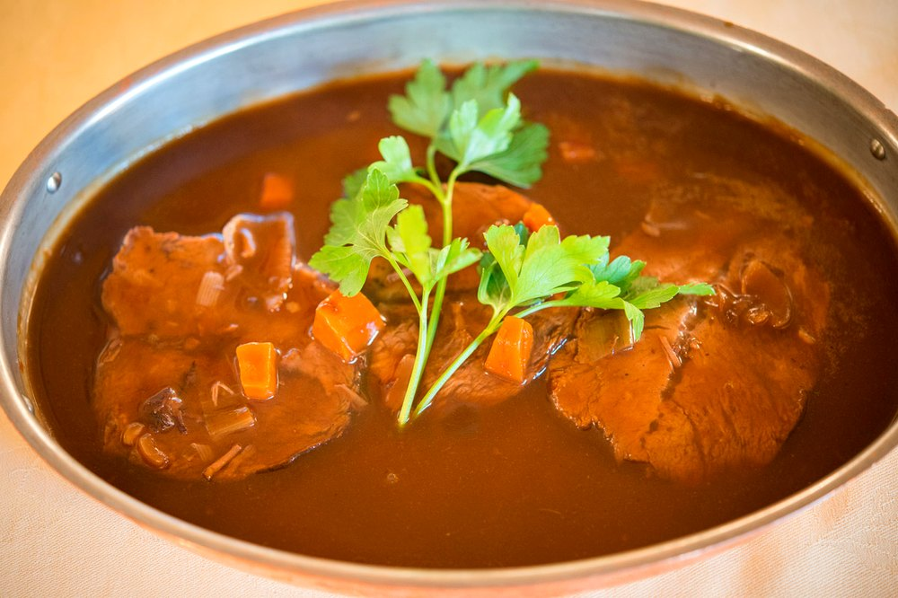
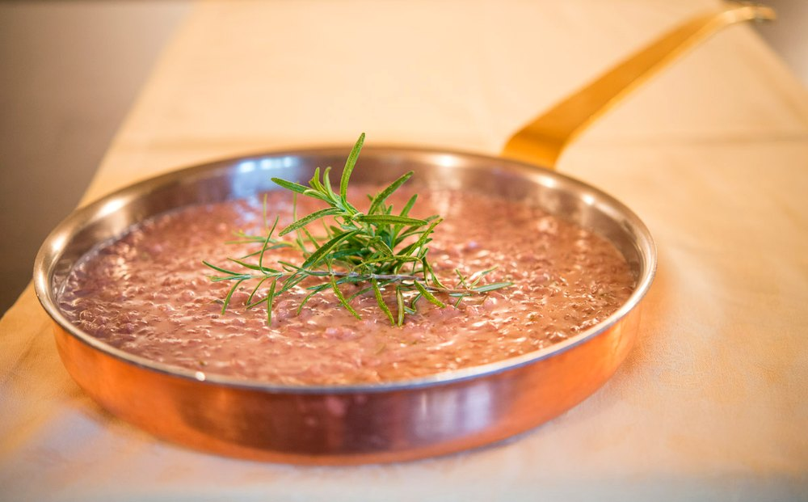
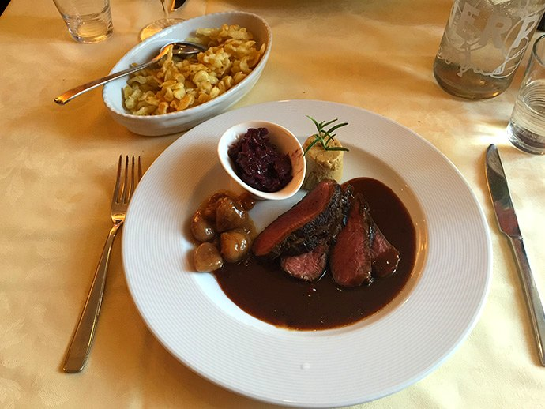

Ultime news
Tre grotti da non perdere in Canton Ticino
Essere ristoratori in Ticino può essere difficile: l'Antico Grotto Ticino tra le mete consigliate. dal sito miprendoemiportovia.it — Giorgia Esere.

Mendrisio · Ticino · Svizzera
Il ritrovo ideale per chi piace la cucina tipica di grande qualità e amanti del buon vino.
Il Grotto · dalle origini
L'Antico Grotto Ticino si trova nella via delle Cantine del Borgo di Mendrisio. Costruito oltre un secolo fa ma rimodernato da poco, dispone di spazi ben distribuiti sia all'interno che all'esterno.
La cantina dei vini è scavata in una roccia calcarea che garantisce ottime condizioni per il mantenimento delle numerose bottiglie di vini. Cerchiamo ed acquistiamo costantemente solo prodotti locali e di altissima qualità.
100+
Anni di storia
Roccia
Cantina nella pietra
Km 0
Prodotti del territorio

La nostra accoglienza
Le qualità dei nostri piatti e i nostri servizi rispecchiano i nostri valori e la nostra storia.
Spazi ben distribuiti, all'interno e all'esterno, costruiti oltre un secolo fa e rimodernati da poco.
Cordialità ed accoglienza da parte di uno staff preparato. L'ospitalità è l'elemento che ci guida.
Prodotti locali, formaggi e salumi tipici, senza dimenticare i prodotti stagionali e i piatti della tradizione.
Per sentirsi a proprio agio come a casa. Ogni dettaglio viene ripensato e rielaborato con cura.
La cucina
Piatti basati sulle antiche e gustose ricette del territorio, legati alle produzioni e alle merci locali.

Cotto lentamente nel vino del territorio.

Mantecato in padella di rame, profumato al rosmarino.

Con spätzli, marroni e composta — la tradizione d'autunno.
I famosi formaggini della Valle di Muggio, il formaggio Zincalin con stagionatura di due mesi prodotto con latte crudo, salumi tipici e i prodotti stagionali.
Funghi, brasato al Merlot, luganighetta alle cipolle, castagne, carciofi, selvaggina di capriolo, lepre e cinghiale; carni alla griglia, costine, entrecôte di manzo, nodini di vitello, pollo di grano, Rib Eye.
Dalla crema caramellata ai semifreddi, senza dimenticare la famosa crostata di frutta e il tiramisù — tutti fatti rigorosamente in casa.
Ultime news
Essere ristoratori in Ticino può essere difficile: l'Antico Grotto Ticino tra le mete consigliate. dal sito miprendoemiportovia.it — Giorgia Esere.
Recensioni
Puoi trovare l'Antico Grotto Ticino anche su Tripadvisor. Lascia una recensione e racconta la tua esperienza al grotto.
Vai su Tripadvisor →Contatti e Orari
Antico Grotto Ticino
Via alle Cantine 20 · 6850 Mendrisio
Ticino · Svizzera
Telefono
+41 91 646 77 97